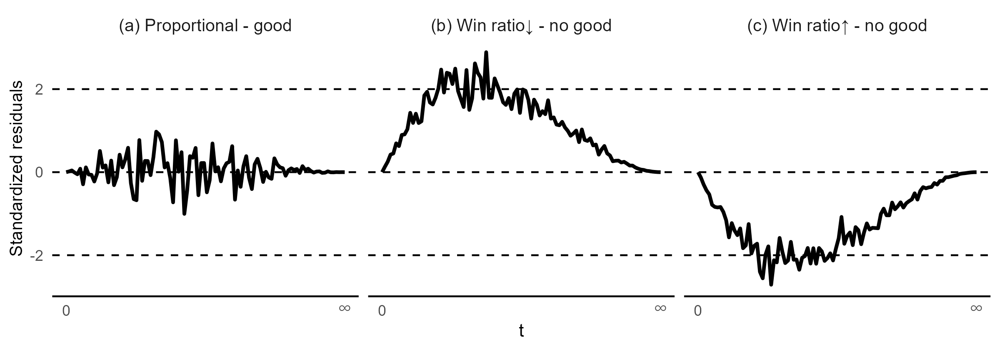
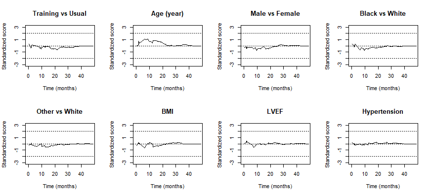

Statistical Methods for Composite Endpoints: Win Ratio and Beyond
Chapter 4 - Semiparametric Regression
Department of Biostatistics & Medical Informatics
University of Wisconsin-Madison
May 31, 2025
Outline
Proportional win-fractions (PW) model
- Model specification
- An extension of Cox PH model and two-sample WR
- Estimation and residual analysis
- HF-ACTION example (
WRpackage)
- Model specification
High-dimensional data
- Regularization by elastic net
- HF-ACTION example (
WRNetpackage)
\[\newcommand{\d}{{\rm d}} \newcommand{\T}{{\rm T}} \newcommand{\dd}{{\rm d}} \newcommand{\cc}{{\rm c}} \newcommand{\pr}{{\rm pr}} \newcommand{\var}{{\rm var}} \newcommand{\se}{{\rm se}} \newcommand{\indep}{\perp \!\!\! \perp} \newcommand{\Pn}{n^{-1}\sum_{i=1}^n} \newcommand\mymathop[1]{\mathop{\operatorname{#1}}} \newcommand{\Ut}{{n \choose 2}^{-1}\sum_{i<j}\sum} \def\a{{(a)}} \def\b{{(1-a)}} \def\t{{(1)}} \def\c{{(0)}} \def\d{{\rm d}} \def\T{{\rm T}} \def\bs{\boldsymbol} \def\C{{\mathcal C}} \def\S{{\mathcal S}} \def\Sk{{\mathcal S}^{(k)}} \newcommand{\wh}{\widehat} \]
Regression Framework
- Regression vs two-sample
- Adjustment for confounding
- Quantitative predictors
- Statistical efficiency
- Screening of prognostic factors
- Treatment, demographics (e.g., age, race, sex), medical history (e.g., diabetes, prior CVD), current medication (e.g., \(\beta\)-blocker, ACE inhibitor)
| Univariate | Hierarchical composite | |
|---|---|---|
| Hypothesis testing | Gehan, log-rank | Win ratio/odds, net benefit (Ch 2) |
| Nonparametric estimation | RMST | RMT-IF (Ch 3) |
| Semiparametric regression | Cox PH model | ? |
PW Model
Win Ratio Regression
- Modeling target
- Two independent subjects \((\mathcal H^*_i, Z_i)\) and \((\mathcal H^*_j, Z_j)\)
- \(E\{\mathcal W(\mathcal H^*_i,\mathcal H^*_j)(t)\mid Z_i, Z_j\}\): Conditional win fraction (probability) for \(i\) against \(j\) at \(t\)
- \(E\{\mathcal W(\mathcal H^*_j,\mathcal H^*_i)(t)\mid Z_i, Z_j\}\): Conditional win fraction (probability) for \(j\) against \(i\) at \(t\)
- Covariate-specific win ratio \[\begin{equation}\label{eq:cov_spec_curtail_wr} WR(t; Z_i, Z_j;\mathcal W):= \frac{E\{\mathcal W(\mathcal H^*_i,\mathcal H^*_j)(t)\mid Z_i,Z_j\}}{E\{\mathcal W(\mathcal H^*_j,\mathcal H^*_i)(t)\mid Z_i, Z_j\}} \end{equation}\]
- Regress \(WR(t; Z_i, Z_j;\mathcal W)\) vs \((Z_i, Z_j)\)
- \(WR(t; Z_i, Z_j;\mathcal W) \geq 0\)
- \(WR(t; Z_i, Z_j;\mathcal W) = WR(t; Z_j, Z_i;\mathcal W)^{-1}\)
- Two independent subjects \((\mathcal H^*_i, Z_i)\) and \((\mathcal H^*_j, Z_j)\)
Model Specification
- Proportional win-fractions (PW) model
Multiplicative effects (Mao & Wang, 2021) \[\begin{equation}\label{eq:wr_reg} WR(t\mid Z_i, Z_j;\mathcal W)=\exp\left\{\beta^{\rm T}\left(Z_i- Z_j\right)\right\} \end{equation}\]
PW: covariate-specific win/loss fractions proportional over time
- WR constant over time
\(\beta\): log-WR associated with unit increases in covariates (regardless of follow-up time)
Semiparametric: Parametric covariate effects, nonparametric otherwise
Denote model by PW(\(\mathcal W\))
- Stresses dependency on win function
Special Cases
- Two-sample WR
- \(\exp(\beta)\): WR comparing group \(Z=1\) with group \(Z=0\)
- Cox PH model
- PW\((\mathcal W_{\rm TFE})\) \(\Leftrightarrow\) Cox PH model on TFE \(\tilde T\) \[ \pr(t\leq \tilde T<t+\dd t\mid \tilde T\geq t; Z) =\exp(-\beta^\T Z)\lambda_0(t)\dd t \]
- Bivariate Lehmann model
- PW\((\mathcal W_{\rm P})\) \(\Leftarrow\) Lehmann model on \((D, T_1)\) \[
\pr(D>s, T_1 > t\mid Z) = H_0(s, t)^{\exp(-\beta^\T Z)}
\]
- PH on both \(D\) and \(\{T_1\mid D\}\) with same HRs \(\exp(-\beta)\)
- PW\((\mathcal W_{\rm P})\) \(\Leftarrow\) Lehmann model on \((D, T_1)\) \[
\pr(D>s, T_1 > t\mid Z) = H_0(s, t)^{\exp(-\beta^\T Z)}
\]
Censored Data and Win Residual
- Observed outcomes
- \(\mathcal H^*(X_i)\): outcomes up to \(X_i=D_i\wedge C_i\)
- Observed win process \(\delta_{ij}(t)=\mathcal W(\mathcal H^*_i,\mathcal H^*_j)(X_i\wedge X_j\wedge t)\)
- Determinacy (win or loss) indicator: \(R_{ij}(t)=\delta_{ij}(t)+\delta_{ji}(t)\)
- Win residuals
- Definition \[\begin{equation}\label{eq:wr:resid} M_{ij}(t\mid Z_i, Z_j;\beta)=\underbrace{\delta_{ij}(t)}_{\rm observed\,\,win} - \underbrace{R_{ij}(t)\frac{\exp\left\{\beta^{\rm T}\left( Z_i- Z_j\right)\right\}}{ 1+\exp\left\{\beta^{\rm T}\left(Z_i- Z_j\right)\right\}}}_{\rm model-based\,\, prediction} \end{equation}\]
- \(E\{M_{ij}(t\mid Z_i, Z_j;\beta)\mid Z_i, Z_j\} =0\) for all \(t\)
Estimation and Inference
- Estimating equation
- Sum of all possible pairs of covariate-/time-weighted residuals \[\begin{equation}\label{eq:wr:ee} \Ut\int_0^\infty (Z_i - Z_j) h(t; Z_i, Z_j)\dd M_{ij}(t \mid Z_i, Z_j;\beta)=0 \end{equation}\]
- Weight function \(h(t; Z_i, Z_j)\equiv 1\)
- Newton-Raphson to get root \(\hat\beta\)
- \(\hat\var(\hat\beta)\): \(U\)-statistic variance
Checking Proportionality
- Cumulative residuals
- Rescaled \(\hat U_n(t)=\Ut(Z_i - Z_j)M_{ij}(t \mid Z_i, Z_j;\hat\beta)\)
- Similar to score processes in Cox model (Lin et al., 1993)

Stratified Model
- Address non-proportionality
- Categorical predictor \(\to\) stratifier
- Stratified PW model
- Idea: within-stratum comparisons (Dong et al., 2017, 2023)
- Model specification (Wang & Mao, 2022) \[
\frac{E\{\mathcal W(\mathcal H^*_{li},\mathcal H^*_{lj})(t)\mid Z_{li},Z_{lj}\}}{E\{\mathcal W(\mathcal H^*_{lj},\mathcal H^*_{li})(t)\mid Z_{li}, Z_{lj}\}} = \exp\left\{\beta^{\rm T}\left(Z_{li}- Z_{lj}\right)\right\}
\]
- \((H^*_{li}, Z_{li}), (H^*_{lj}, Z_{lj})\): \(i\)th and \(j\)th outcome-covariates in \(l\)th stratum \((l= 1,\ldots, L)\)
- Proportionality required only within stratum, not between
Software: WR::pwreg()
- Basic syntax for PW\((\mathcal W_{\rm P})\)
(ID, time, status): same asWR::WRrec()Z: covariate matrix;strata: possible stratifier (categorical)
- Output: an object of class
pwregobj$beta: \(\hat\beta\)obj$Var: \(\hat\var(\hat\beta)\)print(obj)to summarize regression results
Software: WR::score.proc()
- Checking proportionality
obj: apwregobject
- Output: an object of class
score.procscore.obj$t: \(t\)score.obj$score: a matrix with rescaled residual process for each covariate per rowplot(score.obj, k): plot the rescaled residuals for \(k\)th covariate
HF-ACTION: Non-Ischemic
- Study information
- Population: 451 non-ischemic HF patients in HF-ACTION
- Outcome: death > (first) hospitalization
- Covariates: treatment, age, sex, race, BMI, LVEF, histories of hypertension, COPD, diabetes, current use of ACE inhibitor, \(\beta\)-blocker, smoking status
HF-ACTION: Table One
| Usual care (N=231) | Training (N=220) | |
|---|---|---|
| Age (years) | 56 (46, 65.5) | 54 (46, 62.2) |
| Sex - Female | 153 (66.2%) | 121 (55%) |
| Sex - Male | 78 (33.8%) | 99 (45%) |
| Race - White | 117 (50.6%) | 111 (50.5%) |
| Race - Black | 103 (44.6%) | 101 (45.9%) |
| Race - Other | 11 (4.8%) | 8 (3.6%) |
| BMI | 31.3 (26.3, 37.2) | 31 (25.8, 36.5) |
| LVEF (%) | 25.1 (20.9, 31.3) | 25.1 (20.9, 31.2) |
| Hypertension | 129 (55.8%) | 129 (58.6%) |
| COPD | 21 (9.1%) | 15 (6.8%) |
| Diabetes | 71 (30.7%) | 58 (26.4%) |
| ACE Inhibitor | 174 (75.3%) | 167 (75.9%) |
| Beta Blocker | 223 (96.5%) | 211 (95.9%) |
HF-ACTION: PW Regression
- Fit PW(\(\mathcal W_{\rm P}\))
- Death > (first) hospitalization
# number of covariates (-c(ID, time, status))
p <- ncol(non_ischemic) - 3
# extract ID, time, status and covariates matrix Z from the data.
# note that: ID, time and status should be column vector
ID <- non_ischemic[,"ID"]
time <- non_ischemic[,"time"] / 30.5 # days to months
status <- non_ischemic[,"status"]
Z <- as.matrix(non_ischemic[, 4:(3+p)])
# pass the parameters into the function
obj <- pwreg(ID, time, status, Z)HF-ACTION: Results (I)
- Model summary
obj
#> Call:
#> pwreg(ID = ID, time = time, status = status, Z = Z)
#> Total number of pairs: 101475
#> Wins-losses on death: 7644 (7.5%)
#> Wins-losses on non-fatal event: 78387 (77.2%)
#> Indeterminate pairs 15444 (15.2%)
#>
#> Newton-Raphson algorithm converged in 5 iterations.
#>
#> Overall test: chisq test with 13 degrees of freedom;
#> Wald statistic 24.9 with p-value 0.02392931 HF-ACTION: Results (II)
- Inference table for \(\hat\beta\)
- Age, black vs white, LVEF significant
obj
#> Estimate se z.value p.value
#> Training vs Usual 0.1906687 0.1264658 1.5077 0.13164
#> Age (year) -0.0128306 0.0057285 -2.2398 0.02510 *
#> Male vs Female -0.1552923 0.1294198 -1.1999 0.23017
#> Black vs White -0.3026335 0.1461330 -2.0709 0.03836 *
#> Other vs White -0.3565390 0.3424360 -1.0412 0.29779
#> BMI -0.0181310 0.0097582 -1.8580 0.06316 .
#> LVEF 0.0214905 0.0086449 2.4859 0.01292 *
#> Hypertension -0.0318291 0.1456217 -0.2186 0.82698
#> COPD -0.4023069 0.2066821 -1.9465 0.05159 .
#> Diabetes 0.0703990 0.1419998 0.4958 0.62006
#> ACE Inhibitor -0.1068201 0.1571317 -0.6798 0.49662
#> Beta Blocker -0.5344979 0.3289319 -1.6250 0.10417
#> Smoker -0.0602350 0.1682826 -0.3579 0.72039 HF-ACTION: Race Effect
- Joint test \((\chi_2^2)\) on race categories
- Black/African American, white, other
# extract estimates of (beta_4, beta_5)
beta <- matrix(obj$beta[4:5])
# extract estimated covariance matrix for (beta_4, beta_5)
Sigma <- obj$Var[4:5, 4:5]
# compute chisq statistic in quadratic form
chistats <- t(beta) %*% solve(Sigma) %*% beta
# compare the Wald statistic with the reference
# distribution of chisq(2) to obtain the p-value
1 - pchisq(chistats, df = 2)
#> [,1]
#> [1,] 0.1016988HF-ACTION: Win Ratio Table
- Covariate-specific WRs \(\exp(\hat\beta)\)
- Training wins 21.0% more than usual care
#> Point and interval estimates for the win ratios:
#> Win Ratio 95% lower CL 95% higher CL
#> Training vs Usual 1.2100585 0.9444056 1.5504374
#> Age (year) 0.9872513 0.9762288 0.9983983
#> Male vs Female 0.8561648 0.6643471 1.1033663
#> Black vs White 0.7388699 0.5548548 0.9839127
#> Other vs White 0.7000951 0.3578286 1.3697431
#> BMI 0.9820323 0.9634287 1.0009952
#> LVEF 1.0217231 1.0045572 1.0391823
#> Hypertension 0.9686721 0.7281543 1.2886357
#> COPD 0.6687755 0.4460178 1.0027865
#> Diabetes 1.0729362 0.8122757 1.4172433
#> ACE Inhibitor 0.8986873 0.6604773 1.2228110
#> Beta Blocker 0.5859634 0.3075270 1.1164977
#> Smoker 0.9415433 0.6770144 1.3094312HF-ACTION: Residual Analysis
- Check proportionality assumption on covariates
HF-ACTION: Residual Plot
- Mostly well-behaved 
- Exercise: Fit stratified PW model by sex
Regularized Regression
Standard Model-Fitting
- Estimating equation \[\begin{equation}
U_n(\beta) = |\mathcal R|^{-1} \sum_{(i, j)\in \mathcal R}
z_{ij} \left\{ \delta_{ij} - \frac{\exp(\beta^\top z_{ij})}{1 + \exp(\beta^\top z_{ij})} \right\}
\end{equation}\]
- \(z_{ij} = z_i - z_j\): covariate difference
- \(\delta_{ij} = \mathcal{W}(\bs Y_i, \bs Y_j)(X_i \wedge X_j)\): observed win indicator
- \(\mathcal{R}=\{(i, j): \delta_{ij} + \delta_{ji} > 0\}\): set of comparable pairs
- \(z_{ij} = z_i - z_j\): covariate difference
- High-dimensional \(z\)?
- Variable selection
- Improve generalizability
Regularized PW model
- Objective function (Mao, 2025; Zou & Hastie, 2005): \[\begin{align}\label{eq:obj_fun}
l_n(\beta;\lambda) &= - |\mathcal R|^{-1}\sum_{(i, j)\in\mathcal R}\left[\delta_{ij}\beta^\T z_{ij} - \log\{1+\exp(\beta^\T z_{ij})\}\right]\notag\\
&\hspace{3em}+\lambda\left\{(1-\alpha)||\beta||_2^2/2+\alpha||\beta||_1\right\}
\end{align}\]
- Pathwise solution \(\hat\beta(\lambda) = \arg\min_\beta l_n(\beta;\lambda)\)
- Numerically equivalent to regularized logistic regression
- Tuning parameter \(\lambda\geq 0\)—determined by cross-validation (CV)
- \(\partial l_n(\beta; 0)/\partial\beta = U_n(\beta)\)
- Mixing parameter \(\alpha \in (0, 1)\)
- \(\alpha > 0\) \(\longrightarrow\) some components of \(\hat\beta(\lambda)=0\) (performs variable selection)
- Pathwise solution \(\hat\beta(\lambda) = \arg\min_\beta l_n(\beta;\lambda)\)
Pathwise Solution
Pathwise algorithm (Friedman et al., 2010)
- Efficient computation of \(\hat\beta(\lambda)\) for all \(\lambda\)
x: covariate matrix containing \(z_{ij}\) ,y: response vector \(\delta_{ij}\)intercept = FALSEremoves interceptlambda: user-specified \(\lambda\) vector
Cross Validation
- CV routine for logistic regression
cv.glmnet()- Partition pairs into \(k\) folds—train and validate
- Built-in
cv.glmnet() - Not appropriate
- Overlap between analysis and validation sets
- Inflation of sample size
- Subject-based CV
- Partition subjects into \(k\) folds \(\mathcal{S}^{(k)}\)
- Train on \(\mathcal{S}^{(-k)}\): \(\hat\beta^{(-k)}(\lambda)\) \(\longrightarrow\) validate on \(\mathcal{S}^{(k)}\)
- Identify optimal \(\lambda\) maximizing average concordance index
Win/Risk Score
- Motivation
- Model-predicted win probability given comparability \[\mu(z_i, z_j;\beta)=\frac{\exp\{\beta^\T(z_i-z_j)\}}{1 + \exp\{\beta^\T(z_i-z_j)\}}\]
- \(\beta^\T z\) measures tendency to win \[\begin{align*} \mu(z_i, z_j;\beta) > 0.5 &\Leftrightarrow \beta^\T z_i > \beta^\T z_j;\\ \mu(z_i, z_j;\beta) = 0.5 &\Leftrightarrow \beta^\T z_i = \beta^\T z_j;\\ \mu(z_i, z_j;\beta) < 0.5 &\Leftrightarrow \beta^\T z_i < \beta^\T z_j. \end{align*}\]
- \(-\beta^\T z\): risk score
Generalized Concordance Index
- Validation/test set \(\mathcal S^*\)
- Pairwise indices \[ \mathcal R^* = \{(i,j): \delta_{ij}+\delta_{ji}\neq 0; i<j; i,j\in\S^*\} \]
- Concordance (Cheung et al., 2019; Harrell et al., 1982; Uno et al., 2011)
- Proportion of correct ranking of pairs \[\begin{equation}\label{eq:c_index} \mathcal C(\S^*;\beta) = |\mathcal R^*|^{-1}\sum_{(i, j)\in\mathcal R^*} \bigl[\underbrace{I\{(2\delta_{ij} -1)(\beta^\T z_i - \beta^\T z_j)>0\}}_{\text{Concordant pair}}+2^{-1} \underbrace{I(\beta^\T z_i = \beta^\T z_j)}_{\text{Tied score}}\bigr] \end{equation}\]
Validation and Testing
- Model tuning
- \(k\)th-fold CV concordance: \(C^{(k)}(\lambda) = \mathcal C\left(\Sk;\wh\beta^{(-k)}(\lambda)\right)\)
- Optimal \(\lambda_{\rm opt} = \arg\max_\lambda K^{-1}\sum_{k=1}^K\C^{(k)}(\lambda)\)
- Final model: \(\wh\beta(\lambda_{\rm opt})\)
- Variable importance
- Component-wise \(|\beta|/\text{sd}(z)\)
- Test C-index
- \(\mathcal C(\S^*;\wh\beta(\lambda_{\rm opt}))\) for test set \(\S^*\)
Workflow - Input Data
Data format
- Long format with columns:
id,time,status, and covariates
# Load package containing data library(WR) df <- gbc # n = 686 subjects, p = 9 covariates df # status = 0 (censored), 1 (death), 2 (recurrence) #> id time status hormone age menopause size grade ... #>1 1 43.836066 2 1 38 1 18 3 #>2 1 74.819672 0 1 38 1 18 3 #>3 2 46.557377 2 1 52 1 20 1 #>4 2 65.770492 0 1 52 1 20 1 #>5 3 41.934426 2 1 47 1 30 2 #>...- Long format with columns:
Workflow - Data Partitioning
- Splitting data
wr_split()function
Workflow - Cross-Validation (I)
- \(k\)-fold CV
cv_wrnet(id, time, status, Z, k = 10, ...)
# 10-fold CV -------------------------------------------
set.seed(1234)
obj_cv <- cv_wrnet(df_train$id, df_train$time, df_train$status,
df_train |> select(-c(id, time, status)))
# Plot CV results (C-index vs log-lambda)
obj_cv |>
ggplot(aes(x = log(lambda), y = concordance)) +
geom_point() + geom_line() + theme_minimal()
# Optimal lambda
lambda_opt <- obj_cv$lambda[which.max(obj_cv$concordance)]
lambda_opt
#> [1] 0.0171976Workflow - Cross-Validation (II)
- Validation C-index

Workflow - Final Model
Fit final model
wrnet(id, time, status, Z, lambda = lambda_opt, ...)
# Final model ------------------------------------------ final_fit <- wrnet(df_train$id, df_train$time, df_train$status, df_train |> select(-c(id, time, status)), lambda = lambda_opt) final_fit$beta # Estimated coefficients #> s0 #> hormone 0.306026364 #> age 0.003111462 #> menopause . #> size -0.007720497 #> grade -0.285511701 #> nodes -0.082227827 #> prog_recp 0.001861367 #> estrg_recp .
Workflow - Variable Importance
- Variable importance

Workflow - Test Performance
- Overall and component-wise C-index
test_wrnet(final_fit, df_test)
Conclusion
Notes
- More on PW
Check functional form (linear, quadratic, grouped) of \(Z\) (Lin et al., 1993)
- E.g., is age effect linear?
\[ \mbox{plot} \sum_{i, j: Z_i - Z_j\leq z}(Z_i - Z_j)M_{ij}(\infty \mid Z_i, Z_j;\hat\beta) \mbox{ against } z\in\mathbb R \]
Currently
WR::pwreg()implements only PW(\(\mathcal W_{\rm P}\))- More functionalities to be added
Variations: regression of win ratio/odds (Follmann et al., 2019; Song et al., 2022)
Summary
- PW: WR regression
- Proportionality and multiplicativity \[
WR(t\mid Z_i, Z_j;\mathcal W)=\exp\left\{\beta^{\rm T}\left(Z_i- Z_j\right)\right\}
\]
- \(\exp(\beta)\): WRs with unit increases in covariates
WR::pwreg(ID, time, status, Z, strata)
- Proportionality and multiplicativity \[
WR(t\mid Z_i, Z_j;\mathcal W)=\exp\left\{\beta^{\rm T}\left(Z_i- Z_j\right)\right\}
\]
- Regularized PW
wrnet: https://lmaowisc.github.io/wrnet/- Efficient implementation with
glmnet()backend - Supports CV, test evaluation, and variable importance